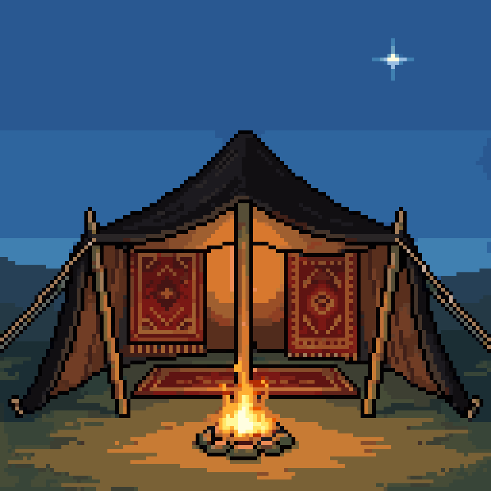
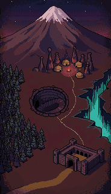
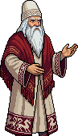
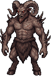
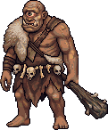

Obalootİndir
Obanın kutu yerin dibine düştü. Türk efsanelerinin alplarıyla Derinkuyu'ya in, kat kat bekçileri devir, kutu geri getir.
Dede Korkut ateş başında anlatır. Basat, Asena, Şahmeran ve sen: ilk kapıdan in.

İlk bekçi. Zırhı kalın, sırtı dikenli. Devirirsen ilk kapı mühürlenir.

Gece uyuyanın göğsüne çöker. "Düşlerinizde bile size gülüyoruz."
Oğuz'dan günde iki adam istedi. Basat onu kendi kılıcıyla devirdi. Şimdi sıra sende.
